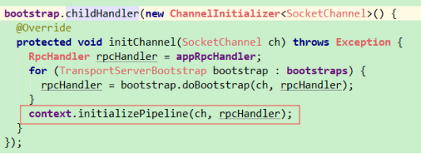

1. 集群启动源码分析
1.1 分为master和worker的启动， 2者启动流程差不多，读懂一个即可。集群启动主要就是通信环境的建立(接收消息，处理消息)和master、worker的注册。
1.1.1 spark是分布式的，想要协调执行，必然要通信，spark使用了netty框架通信。使用RPCEnv对象来抽象，启动master就会创建RPCEnv上下文对象。各个角色都通过RPCEnv来通信，相当于web中的session作用域。角色通信的方式类似于发邮件。
1.1.2 通信环境可以理解为一个工具类，每个角色都会创建。
1.2 用文字描述的方式很难读，还不如直接打开IDE把代码复制出来然后写注释呢。所以这里用图画的形式描述
1.2.1 通信角色，每个角色在通信环境中抽象为各自的EndPoint
{1} Master
{2} Worker
{3} Driver
{4} Application
{5} Executor
1.2.2 process
{1} 执行start-all.sh后，先执行start-master.sh，调用Master的main
{2} 创建nettyEnv，这个对象有2个重要的属性，dispatcher和transportContext，
[1] dispatcher用来接收消息，根据消息的中目的地的name调用对应name的EndPointData的inbox的process来处理。
[2] transportContext用来提供创建server和设置通信管道的配置
{3} 有了nerryEnv，就可以根据套接字创建server，接收角色的注册，创建各自对应的EndPointData。提供服务。
1.3 文字描述：start-all脚本里面调用了start-master和start-slaves.sh脚本，start-master.sh主要功能就是通信环境搭建
1.3.1 start-master.sh里面调用了Master类，里面有main方法
{1} startRpcEnvAndEndpoint(args.host, args.port, args.webUiPort, conf) 此方法用来创建通用的EndPoint和搭建通信环境
{2} 里面调用链为RpcEnv.create - new NettyRpcEnvFactory().create(config)
{3} create中 创建了sparkConf对象，然后new了NettyRpcEnv对象，new一个类时，除了里面的方法别的都执行
{4} NettyRpcEnv，里面会有2个重要的对象
，
{5} dispatcher用来把接收的消息分发给各角色注册的EndPoint，也就是接收消息，然后交给inbox的process去处理转发
[1] dispatcher会创建一个线程池，接到消息就启动一个线程MessageLoop，MessageLoop有个死循环，会一直监听对应端口是否接收到消息。类似于聊天室的思路，转发消息
[2] receivers是个队列，如果里面有数据，就会调用EndpointData的inbox对象的process去处理这个消息
[3] EndpointData用来封装数据
{6} TransportContext 用来创建server处理消息。需要nettyRpcHandler作为参数
{7} 创建完NettyRpcEnv对象，封装好dispatcher和transportContext对象， 执行startServer，会启动RPC服务，调用已经创建的TransportContext创建server，启动netty
[1] 调用Utils.startServiceOnPort，就会执行startNettyRpcEnv，就会调用nettyEnv.startServer来启动RPC服务，往里一直跟到TransportServer

[2] new TransportServer会执行init方法，创建管道，然后初始化处理消息的hander，用来处理消息。消息分为请求的和响应的，分别用requestHandler和responseHandler来处理，然后统一封装到TransportChannelHandler中

[3] 创建完TransportChannelHandler，意味着server已经启动，处理消息的处理也已经创建并初始化完毕，前面接收消息的dispatcher已经创建好。意味着通信环境已经搭建好
[4] 搭建完环境，接收到消息，就会由dispatcher分发，然后由TransportChannelHandler的channelRead来处理。channelRead会判断是请求还是响应消息，然后分别由对应handler处理
{8} 搭建完环境，main中最后会把master注册到rpcEnv中，然后启动master
1.3.2 start-slaves.sh里面会连接每个节点，启动每个节点的start-slave.sh。start-slave.sh里也会启动一个主类。org.apache.worker.Worker